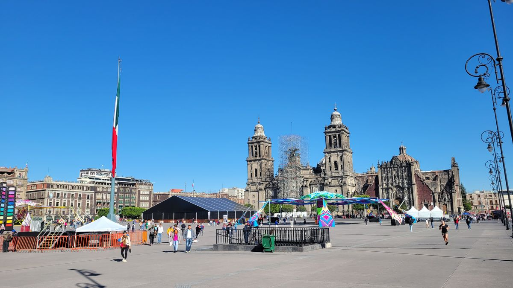
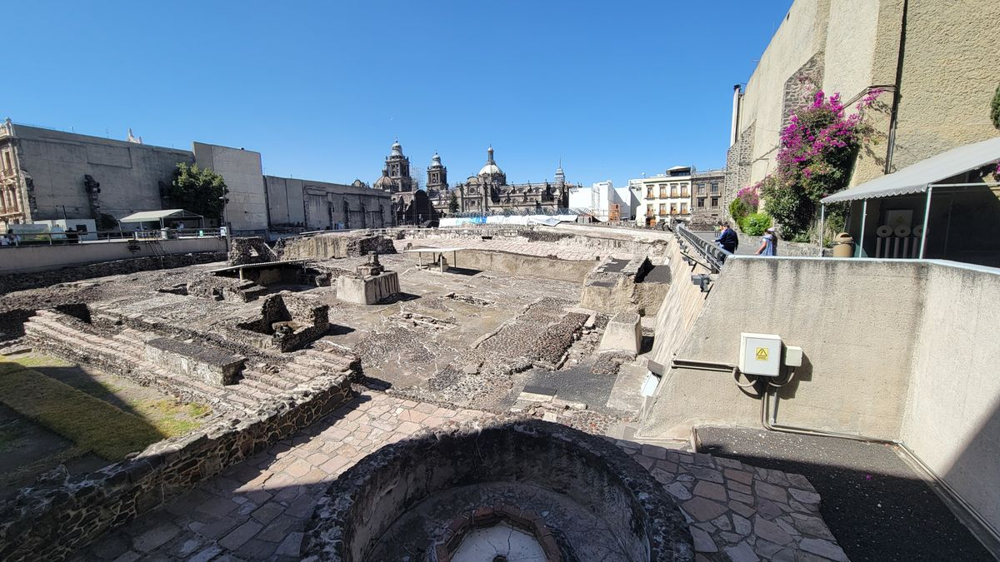
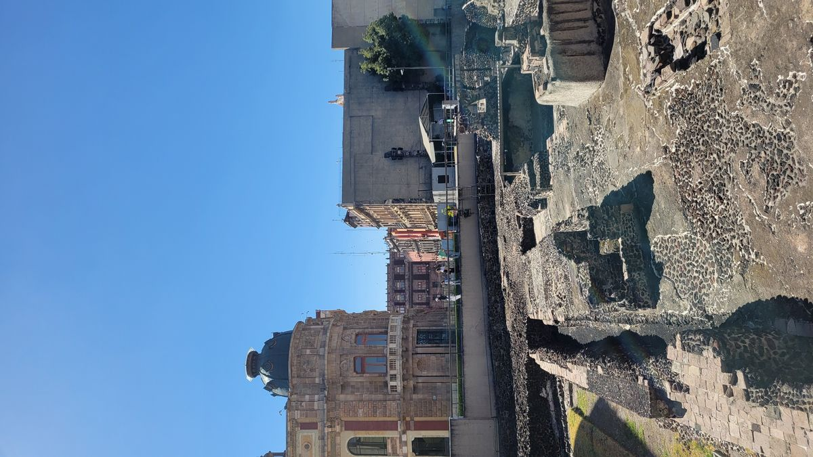
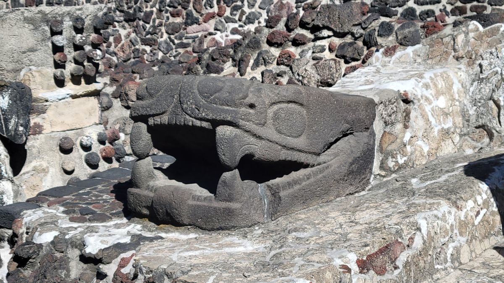
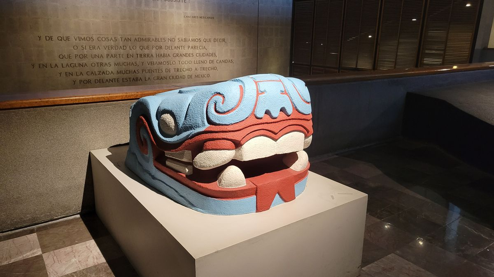
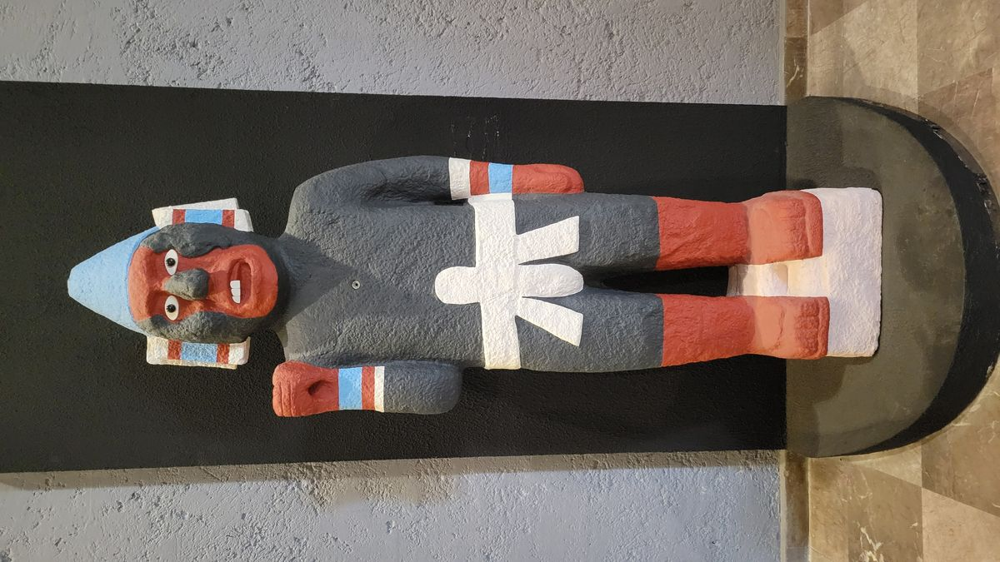
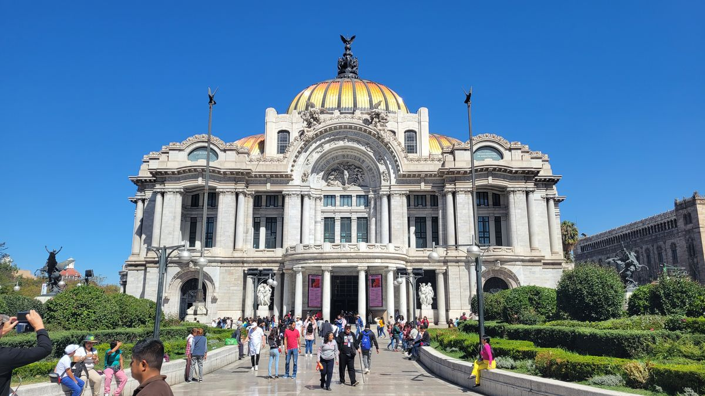
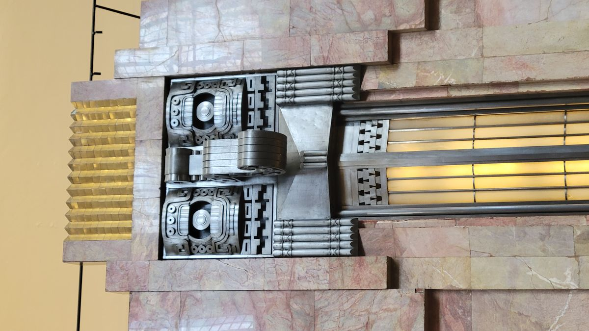
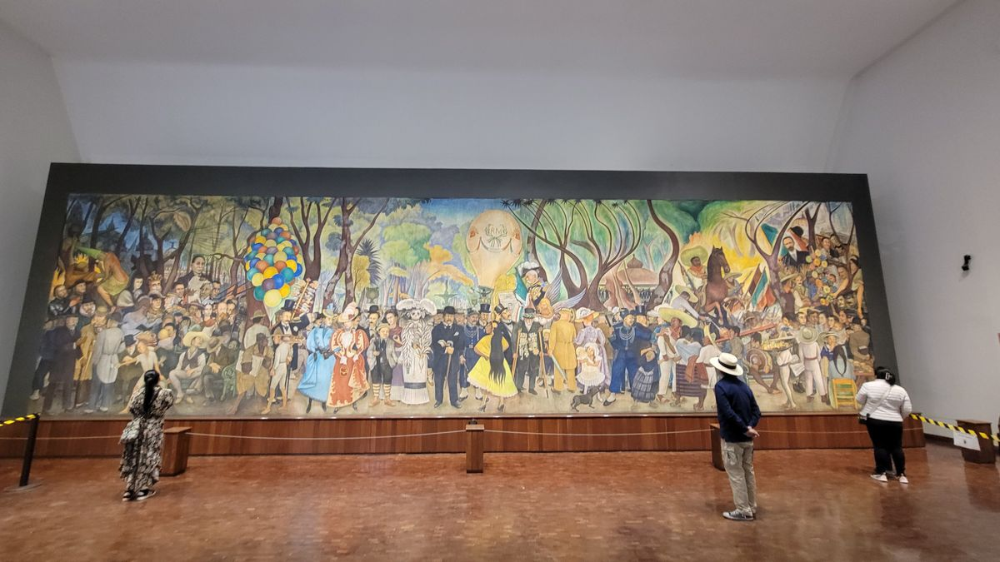
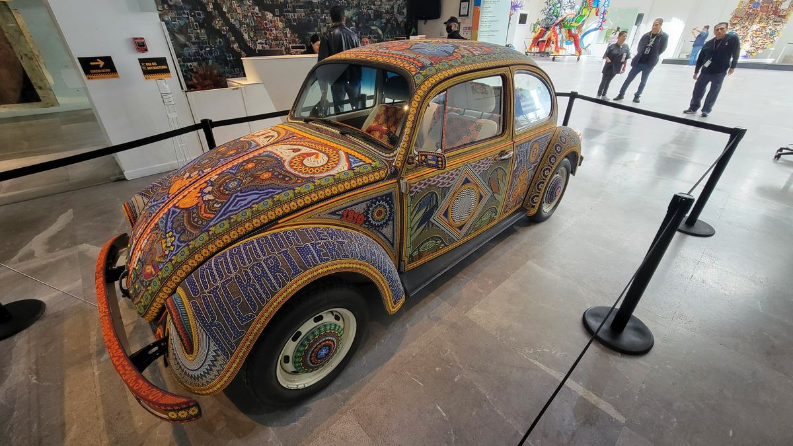

México City, Part 1
Guadalajara to Mexico City should be one of the most trafficked routes in the entire County of México, but somehow, I found myself the only passenger on the bus after 2 stops and one hour left in the journey. It was a holiday weekend and I think most people were getting out of the cities, the traffic being the main indicator. I arrived to the capitals Poinente station over an hour late. The metro line serving the station has been under repairs since November meaning I would have to take a bus to my hostel, further exasperating the delay. I wouldn’t reach my hostel until almost 10pm.
The center of México City (or just México by the locals, similar to how we just call New York City, New York. Not New York City) is a commercial hub. The barricaded store fronts are indicative of this and the streets are calm at that time of night. I pass a small street of restaurants still open even at this late hour and make a mental note of it. Overall, the hostel I chose was in a great area, just 2 blocks south of the Plaza de Constitution, also called the Zocalo, México’s famed central square. Surrounded by the Metropolitan Cathedral, governmental palace (Mexico version of the White house) and the Temlpo Mayor, the center of the ancient Aztec civilization. This spot has been a gathering point for the people of this area for thousands of years. Its massive size is in the same category as the Red Square in Moscow and Tiananmen square in Beijing.

The hostel on the other hand, left some to be desired. Another “hotel that has converted rooms to dorms”. There was someone sleeping in my first assigned bed, the second one has someone’s stuff in my locker. They assured me my stuff would be safe unsecured. I did not take their word for it and found an empty locker and locked my stuff up while I went to find some late-night food. The earlier found restaurants were still open and serving. After getting some much needed sustenance I went back to my bed with a full day of exploring the city planned.
México City is massive. With over 9 million people in the city proper and a staggering 21 million people in the Metropolitan area, its hands down the largest city in the Americas and the 5th largest city in the world. I spent 8 days in the city and felt like I barely scratched the surface on what the city offers to see and do.
My first days were spent just in the immediate area of the Zocalo. There’s enough attractions in this area to keep even the most curious traveler occupied for days. But, the areas most famous attraction is the Templo Mayor, or Main Temple. The ancient capital of the Aztec empire. The Temple is an active archeological site, with new artifacts being found and discoveries being made quite regularly. Much is visible from the street level, with a free walking path along the rim of the site, but for 90 pesos (a little more than $5 usd, currently) you can access the walking paths inside the site and the comprehensive museum attached. A few hours pass easily learning about this ancient site and its significance to the ancient Aztec civilization.





I spent the remainder of the day wandering the area immediately around the plaza. Now, the barricades in front of the stores have been lifted, revealing a busting shopping and commerce area. Many recognizable brands such as American Eagle, H&M, Starbucks and McDonalds are well represented in the area, along with less known to me Mexican retail chains. Admittedly, I grabbed my first Starbucks of the trip, a welcomed comfort item. I think with over a month in this country I have earned a small slice of Americana.
On the second day, I shifted about 5 blocks away and entered and entirely new area, with new sights and experiences to be had. I wish I could go into greater detail about what I saw and did here, but I’ll let the photos do a lot of the talking. I think I went to 3 different museums that day and walked close to 30,000 steps. So, it’s safe to say I took in a whole lot.




The first glimpse into the amazing city has already blown my high expectations. I have so much more to share from the amazing city in the coming days so please, check back regularly (sorry, I won’t make any promises on a posting schedule lol) to see what more I got into in beautiful Mexico City.